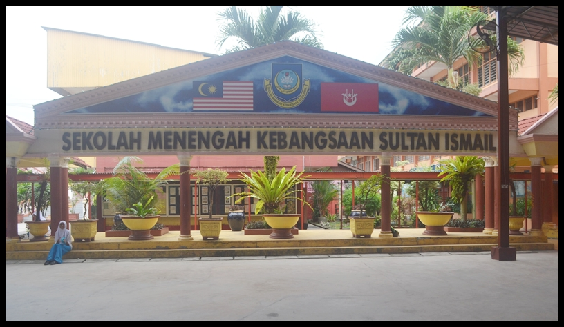

Education
HOMEPAGE BIODATA EDUCATION EXPERIENCE GALLERY INTEREST
My Educations Journey
DIPLOMA IN OFFICE MANAGEMENT AND TECHNOLOGY | UNIVERSITI TEKNOLOGI MARA (UITM), MACHANG, KELANTAN (2017- 2020)

After finish my Sijil Pelajaran Malaysia (SPM) in 2016, i got offer to pursuing my studies to UiTM Machang, Kelantan. I got diploma in Office Management and Technology. During my diploma, i participates in few programmes as a bereau. Furthermore, I am a understanding person who can follow people order well and also, a hardworking and discipline person. I got my diploma after 2 and half years of studies in May 2020.
SEKOLAH MENENGAH KEBANGSAAN SULTAN ISMAIL (2012 - 2016)
After finished my primary school, i went to Sekolah Menengah Kebangsaan Sultan Ismail for my secondary school. I am a school prefect during my high school. Besides, i am also one of target students in my secondary school and i finishes my high school with flying colors. However, i am also very active in sports such as basketball, volleyball and ping pong represent my school.


Love Yourself, Love Myself